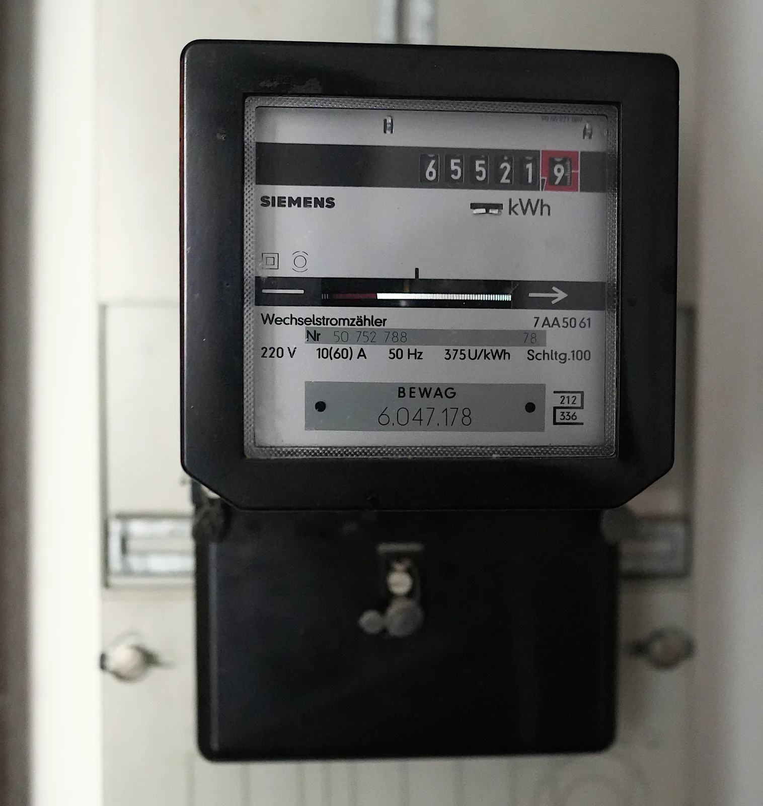

Sähköenergia kotona
Miksi sähkölasku lasketaan kilowattitunneista eikä kodin laitteiden watteista?
Pohjatiedot
- Sähköteho on jännite kertaa virta, $P = UI$, ja vastuksessa $P = RI^2$luku Sähköteho ja vastuksen lämpeneminen
- Teho kertoo, kuinka paljon energiaa muuttuu muuksi sekunnissa. Energiaa voi mitata kilowattitunteinaluku Teho
Ydinpolku: tee vaiheet järjestyksessä. Ydinpolulla ei vain lasketa. Siinä myös tutkitaan, selitetään ja piirretään kuvaajia. Valinnainen-tehtävät ovat lisäharjoittelua. Valinnaisia tehtäviä on 3.
Luvun tärkeät käsitteet Vapaaehtoinen
Tutustu luvun tärkeisiin käsitteisiin. Voit kirjoittaa niiden merkitykset sinulle vahvimmalla kielellä tai useammalla kielellä.
- Sähköteho
- Sähköteho kertoo, kuinka nopeasti laite ottaa sähköenergiaa verkosta. Teho on jännite kertaa virta. Sen yksikkö on watti.
- Kilowattitunti
- Kilowattitunti on energian yksikkö. Se on energia, jonka laite käyttää tunnissa, kun sen teho on yksi kilowatti. Sähkölasku lasketaan kilowattitunneista.
- Sähköenergia
- Sähköenergia on energiaa, jonka laite ottaa sähköverkosta. Sen saa kertomalla laitteen tehon käyttöajalla. Lämmittävässä laitteessa se muuttuu laitteen sisäenergiaksi, joka siirtyy lämpönä ympäristöön.
Pohdinta
Talvi-iltana kotona on paljon laitteita päällä yhtä aikaa. Saunan kiuas lämpenee, keittiössä kiehuu vedenkeitin ja jääkaappi hurisee. Televisio on auki ja puhelin latautuu. Kuukauden päästä tulee sähkölasku. Laskussa ei yleensä lue yhtään wattia. Siinä on kulutus kilowattitunteina ja sen hinta.
Mistä riippuu, kuinka paljon jokin laite kasvattaa sähkölaskua?
Valinnainen Kertaa: sähköteho
Ennusta
Tee ennusteet ennen tutkimista 2 kysymystä
Ennuste 1: vedenkeitin vai jääkaappi?
Ennuste 2: mikä säästää eniten?
Tutki
Kodin laitteiden vuorokausi
Keksitty esimerkkiaineisto · Keksitty esimerkkiaineisto. Luvut ovat laitteiden tyypillisiä nimellistehoja ja arvioituja käyttöaikoja, ei mittaus.
Taulukossa on viiden kodin laitteen teho. Siinä on myös laitteen yhteenlaskettu käyttöaika yhden vuorokauden aikana. Jääkaapin kompressori käy ja sammuu vuorotellen. Siksi sen aika on käyntijaksojen summa.
| laite | $P$ | käyttöaika |
|---|---|---|
| vedenkeitin | $2000\,\text{W}$ | $12\,\text{min}$ |
| jääkaappi | $100\,\text{W}$ | $8{,}0\,\text{h}$ |
| televisio | $100\,\text{W}$ | $3{,}0\,\text{h}$ |
| LED-valaistus | $40\,\text{W}$ | $5{,}0\,\text{h}$ |
| puhelimen laturi | $5{,}0\,\text{W}$ | $2{,}0\,\text{h}$ |
Laske jokaiselle laitteelle vuorokauden energia kilowattitunteina. Muunna ensin teho kilowateiksi ja aika tunneiksi. Kerro sitten ne keskenään. Vertaa lopuksi tuloksia laitteiden tehoihin.
Kuinka paljon sähköenergiaa vedenkeitin käyttää vuorokaudessa? Vastaa kilowattitunteina.
Vihje 1: ohjaava kysymys
Energia on teho kertaa aika. Missä yksiköissä teho ja aika pitää ilmoittaa, jotta tulos on kilowattitunteina?
Vihje 2: mikä yhteys
$2000\,\text{W} = 2{,}0\,\text{kW}$ ja $12\,\text{min} = \tfrac{12}{60}\,\text{h}$.
Vihje 3: välivaihe
$E = 2{,}0\,\text{kW} \cdot 0{,}20\,\text{h}$.
Näytä ratkaisu
Annettu
teho $P = 2000\,\text{W}$, käyttöaika $t = 12\,\text{min}$ vuorokaudessa
Kysytty
vuorokauden energia $E$ kilowattitunteina
Periaate
Kun keitin on päällä, sen teho pysyy samana. Siksi energia on teho kertaa yhteenlaskettu käyttöaika. Kun teho on kilowatteina ja aika tunteina, energia tulee suoraan kilowattitunteina.
Kaava
$E = Pt$
Muunnokset
Sijoitus
Vastaus
$0{,}40\,\text{kWh}$
Vastaus on annettu kahdella merkitsevällä numerolla kuten käyttöaika $12\,\text{min}$.
Järkevyys
Tunnin käytöllä keitin käyttäisi $2{,}0\,\text{kWh}$. Aika $12\,\text{min}$ on viidesosa tunnista, joten $2{,}0\,\text{kWh} : 5 = 0{,}40\,\text{kWh}$. Jääkaappi käyttää samassa ajassa $0{,}10\,\text{kW} \cdot 8{,}0\,\text{h} = 0{,}80\,\text{kWh}$, vaikka sen teho on paljon pienempi.
Lisää tutkittavaa 2 tehtävää
Säästökeinojen vertailu
Keksitty esimerkkiaineisto · Keksitty esimerkkiaineisto. Luvut ovat tyypillisiä tehoja ja arvioituja käyttöaikoja, ei mittaus.
Perhe vertailee neljää säästökeinoa. Ensimmäinen on television ja digiboksin valmiustilan katkaisu. Toinen on vedenkeittimen käytön lyhentäminen kymmenellä minuutilla joka päivä. Kolmas on viiden $40\,\text{W}$:n halogeenilampun vaihto $5{,}0\,\text{W}$:n LED-lamppuihin. Neljäs on yksi saunomiskerta viikossa vähemmän, kun sauna lämmitetään $6{,}0\,\text{kW}$:n kiukaalla. Taulukossa on, kuinka paljon tehoa kukin keino säästää. Siinä on myös, kuinka kauan säästö vaikuttaa vuoden aikana.
| keino | säästyvä teho | aika vuodessa |
|---|---|---|
| valmiustila pois | $3{,}0\,\text{W}$ | $365 \cdot 21\,\text{h}$ |
| keitin $10\,\text{min}$ vähemmän | $2{,}0\,\text{kW}$ | $365 \cdot 10\,\text{min}$ |
| LED-lamput | $5 \cdot 35\,\text{W}$ | $365 \cdot 3{,}0\,\text{h}$ |
| sauna harvemmin | $6{,}0\,\text{kW}$ | $52 \cdot 1{,}5\,\text{h}$ |
Laske jokaisen säästökeinon vuotuinen energiansäästö kilowattitunteina. Järjestä sitten keinot säästön mukaan.
Kuinka paljon sähköenergiaa lamppujen vaihto säästää vuodessa? Vastaa kilowattitunteina.
Vihje 1: ohjaava kysymys
Säästö on säästyvä teho kertaa aika, jona säästö vaikuttaa. Kuinka suuri teho säästyy, kun viisi lamppua vaihdetaan?
Vihje 2: mikä yhteys
Säästyvä teho on
ja aika vuodessa on $365 \cdot 3{,}0\,\text{h}$.
Vihje 3: välivaihe
$\Delta E = 0{,}175\,\text{kW} \cdot 1095\,\text{h}$.
Näytä ratkaisu
Annettu
viisi lamppua, joiden teho pienenee $40\,\text{W}$:sta $5{,}0\,\text{W}$:iin; paloaika $3{,}0\,\text{h}$ päivässä, $365$ päivää
Kysytty
vuoden energiansäästö $\Delta E$ kilowattitunteina
Periaate
Lamput palavat ennen vaihtoa ja sen jälkeen yhtä kauan. Siksi säästö on tehojen erotus kertaa paloaika. Kaikkien viiden lampun säästö on yhden lampun säästö viisinkertaisena.
Kaava
$\Delta E = 5 \cdot (P_1 - P_2) \cdot t$
Muunnokset
Sijoitus
Vastaus
$190\,\text{kWh}$
Vastaus on annettu kahdella merkitsevällä numerolla kuten paloaika $3{,}0\,\text{h}$ ja teho $5{,}0\,\text{W}$.
Järkevyys
Arvio: $0{,}2\,\text{kW} \cdot 1000\,\text{h} = 200\,\text{kWh}$. Taulukon muut säästöt ovat valmiustilalle $0{,}0030\,\text{kW} \cdot 7665\,\text{h} \approx 23\,\text{kWh}$, keittimelle
ja saunalle $6{,}0\,\text{kW} \cdot 78\,\text{h} = 468\,\text{kWh}$. Lamppujen vaihto on siis toiseksi tehokkain keino ja keittimen käytön lyhentäminen kolmanneksi.
Johtopäätös: mikä ratkaisee kulutuksen?
Kirjoita laskujesi perusteella: mikä ratkaisee, kuinka paljon sähköenergiaa laite käyttää? Miksi pienitehoinen laite voi käyttää enemmän energiaa kuin suuritehoinen? Mitkä säästökeinot kannattaa tehdä ensin?
Mallivastaus
Laitteen käyttämä energia on teho kertaa käyttöaika, joten kumpikin ratkaisee yhtä paljon. Jääkaappi käyttää vuorokaudessa $0{,}80\,\text{kWh}$ ja vedenkeitin vain $0{,}40\,\text{kWh}$. Silti keittimen teho on kaksikymmenkertainen. Syy on käyttöaika: jääkaappi käy $8\,\text{h}$ ja keitin $12\,\text{min}$. Säästökeinoista suurin vaikutus on saunomiskerran vähentämisellä, $468\,\text{kWh}$ vuodessa. Seuraavaksi suurin vaikutus on lamppujen vaihdolla, noin $190\,\text{kWh}$. Näissä säästyvä teho ja aika ovat suuria. Keittimen käytön lyhentäminen säästää noin $122\,\text{kWh}$ ja valmiustilan katkaisu vain noin $23\,\text{kWh}$. Kannattaa aloittaa laitteista, joiden energia on suurin. Luvut ovat keksityn esimerkkiaineiston laskettuja arvoja.
Arvioi oma vastauksesi
Merkitse kohdat, jotka sinun vastauksessasi jo on.
Kertaa asia teoriasta ja harjoittele tehtävillä.
Teoria
Ydinajatus
Teho kertoo tahdin, energia määrän
Jokaisen sähkölaitteen arvokilvessä on laitteen nimellisteho. Vedenkeittimessä se on esimerkiksi $2000\,\text{W}$ ja televisiossa $100\,\text{W}$. Teho kertoo, kuinka nopeasti laite ottaa sähköenergiaa sähköverkosta (luku Sähköteho ja vastuksen lämpeneminen). Laite käyttää energiaa sitä enemmän, mitä kauemmin se on päällä. Kun teho pysyy samana, energia on teho kertaa aika. Sähkölaskussa maksetaan pääosin energiasta, ei tehosta.
Suuri teho ei siis yksin tarkoita suurta kulutusta. Vedenkeitin, jonka teho on $2{,}0\,\text{kW}$, käyttää kuudessa minuutissa yhtä paljon energiaa kuin $0{,}10\,\text{kW}$:n televisio kahdessa tunnissa. Kuvaajassa on tehon ja ajan välinen yhteys. Siinä energia on kuvaajan ja aika-akselin väliin jäävä pinta-ala. Kapea ja korkea suorakulmio voi olla yhtä suuri kuin leveä ja matala.

Kilowattitunti on energian yksikkö
Energian SI-yksikkö on joule. Kodin sähköenergia mitataan ja laskutetaan kuitenkin kilowattitunteina. Yksi kilowattitunti on energia, jonka $1\,\text{kW}$:n teholla toimiva laite käyttää tunnissa. Kun teho on kilowatteina ja aika tunteina, energia tulee suoraan kilowattitunteina. Nimi kertoo, miten se lasketaan: kilowatti kertaa tunti. Se ei ole kilowatti tunnissa. Yksi kilowattitunti on $3{,}6$ miljoonaa joulea.
Laitteen virta verkossa
Kodin pistorasioissa on jännite $230\,\text{V}$. Se on vaihtojännitteen tehollinen arvo. Tehollinen arvo tarkoittaa arvoa, jolla laskeminen onnistuu kuten tasajännitteellä. Tässä luvussa tarkastellaan yksinkertaistettuja sähköpiirejä. Niissä virta ja jännite ovat samanvaiheiset eli muuttuvat samaan tahtiin. Näin on esimerkiksi lämmittävissä laitteissa. Muissa laitteissa oletetaan, että tehokerroin on likimain yksi. Tehokerroin on luku, joka on yksi, kun virta ja jännite ovat samanvaiheiset. Silloin laitteen pätöteho eli todellinen teho lasketaan samoin kuin tasajännitteellä: $P = UI$. Yleensä vaihtovirtapiirin pätöteho riippuu myös siitä, kuinka paljon jännite ja virta ovat eri tahdissa. Tätä eroa sanotaan vaihe-eroksi. Laitteen nimellistehosta saadaan virta $I = P : U$. Vedenkeitin ottaa virran $2000\,\text{W} : 230\,\text{V} \approx 8{,}7\,\text{A}$. Puhelimen laturi ottaa vain murto-osan ampeerista. Suuritehoiset laitteet ottavat suuren virran. Siksi kodin virtapiirin sulake rajoittaa, kuinka monta tällaista laitetta voi olla yhtä aikaa päällä samassa piirissä (luku Sähköturvallisuus kotona ja työssä).
Mihin kodin sähköenergia kuluu
Eniten energiaa käyttävät laitteet, joissa sekä teho että käyttöaika ovat suuria. Tällaisia ovat sähkölämmitys, lämminvesivaraaja ja sähkökiuas. Niiden vastuksissa sähköenergia muuttuu vastuksen sisäenergiaksi. Sisäenergia siirtyy lämpönä veteen, ilmaan tai kiviin. Kuuden kilowatin kiuas käyttää puolentoista tunnin saunomiskerralla $9{,}0\,\text{kWh}$. Yhtä paljon energiaa käyttää $100\,\text{W}$:n televisio $90$ tunnissa.
Pienitehoinenkin laite voi kerätä suuren kulutuksen, jos se on päällä koko ajan. Jääkaappi käy vuorokauden ympäri. Valmiustilassa oleva laite käyttää yhden watin teholla vuodessa noin $9\,\text{kWh}$. Säästää voi kahdella tavalla. Voi pienentää tehoa, esimerkiksi vaihtamalla lamput LED-lamppuihin. Voi myös lyhentää käyttöaikaa, esimerkiksi saunomalla harvemmin tai laskemalla huonelämpötilaa. Vaikutus on suurin niissä laitteissa, joiden energia on suurin.
Sähköenergia
Kun laitteen teho pysyy samana, laitteen käyttämä sähköenergia on
$$E = Pt$$
missä $E$ on energia (J tai kWh), $P$ teho (W tai kW) ja $t$ aika (s tai h). Kun teho on watteina ja aika sekunteina, energia tulee jouleina. Kun teho on kilowatteina ja aika tunteina, energia tulee kilowattitunteina. Muunnos tehdään sijoittamalla yksiköt: $1\,\text{kWh} = 1000\,\text{W} \cdot 3600\,\text{s} = 3\,600\,000\,\text{J} = 3{,}6\,\text{MJ}$.
Sähköteho on $P = UI$. Siksi energian voi laskea myös jännitteestä ja virrasta:
$$E = UIt$$
missä $U$ on laitteen jännite (V) ja $I$ sen läpi kulkeva virta (A).
Sähkölaskussa maksetaan sähköenergiasta ja sen siirrosta sähköverkossa kilowattituntia kohti. Lisäksi laskussa on kuukausittaisia perusmaksuja:
$$K = aE + K_\text{perus}$$
missä $K$ on laskun summa (€), $a$ energian ja siirron hinta yhteensä kilowattituntia kohti (€/kWh), $E$ laskutuskauden energia (kWh) ja $K_\text{perus}$ perusmaksut (€). Laskutuskauden energia on sähkömittarin lukemien erotus. Hinnat ilmoitetaan usein sentteinä: $18\,\text{snt/kWh} = 0{,}18\,\text{€/kWh}$.
Yleinen virhekäsitys
Moni ajattelee, että suuritehoinen laite on aina sähkölaskun suurin erä. Teho kertoo kuitenkin vain, kuinka nopeasti laite käyttää energiaa. Vedenkeitin on päällä vain muutamia minuutteja päivässä. Jääkaappi, lämminvesivaraaja ja lämmitys toimivat tuntikausia. Kulutuksen ratkaisee teho kertaa aika.
Toinen yleinen virhe on lukea kilowattitunti "kilowattia tunnissa". Kilowattitunti on energian yksikkö, kilowatti kertaa tunti. Se ei kerro, kuinka nopeasti mikään muuttuu. Kolmas virhe on sekoittaa yksiköitä. Tulos $2000\,\text{W} \cdot 15\,\text{min}$ ei ole $30\,000\,\text{kWh}$. Oikea tulos on $2{,}0\,\text{kW} \cdot 0{,}25\,\text{h} = 0{,}50\,\text{kWh}$.
Tiivistelmä
- Laite toimii samalla teholla. Sen käyttämä sähköenergia on $E = Pt = UIt$. Teho kertoo, kuinka nopeasti energiaa käytetään. Energia kertoo, kuinka paljon sitä käytetään.
- Kilowattitunti on energian yksikkö: $1\,\text{kWh} = 1000\,\text{W} \cdot 3600\,\text{s} = 3{,}6\,\text{MJ}$. Kilowateilla ja tunneilla laskettu energia tulee suoraan kilowattitunteina.
- Lämmittävän laitteen virta $230\,\text{V}$:n verkossa on $I = P : U$. Suuritehoinen laite ottaa suuren virran.
- Sähkölasku on energian ja siirron hinta kertaa kulutettu energia. Siihen lisätään perusmaksut. Energia on mittarin lukemien erotus.
- Eniten säästää pienentämällä niiden laitteiden tehoa tai käyttöaikaa, joiden energia on suurin: lämmitys, lämmin vesi ja sauna.
Valinnainen Palaa ennusteisiisi
Vertaa ennusteitasi laskemiisi energioihin. Palaa sitten alun kysymykseen: miksi sähkölaskussa on kilowattitunteja eikä watteja?
Haluaisitko muuttaa ennustettasi?
Esimerkit
Kun olet lukenut teorian, tee ohjatut esimerkit. Ensin katsot mallilaskun vaihe vaiheelta. Sitten teet valinnat itse. Vihjeet auttavat, jos jäät jumiin.
Esimerkki 1: Lattialämmityksen energia
Kylpyhuoneen sähköisen lattialämmityksen teho on $0{,}80\,\text{kW}$. Termostaatti pitää lämmityksen päällä keskimäärin $6\,\text{h}\ 15\,\text{min}$ vuorokaudessa. Kuinka paljon sähköenergiaa lattialämmitys käyttää $30$ vuorokaudessa? Paljonko se maksaa, kun sähkö maksaa siirtoineen $18\,\text{snt/kWh}$?
Vaihe 1/7
Tunnetut ja kysytty. $P = 0{,}80\,\text{kW}$, käyttöaika $6\,\text{h}\ 15\,\text{min}$ vuorokaudessa, $30$ vuorokautta, hinta $a = 18\,\text{snt/kWh}$. Kysytään energiaa $E$ kilowattitunteina ja kustannusta $K$ euroina.
Vaihe 2/7
Periaate. Kun lämmitys on päällä, sen teho pysyy samana. Siksi energia on teho kertaa yhteenlaskettu käyttöaika. Kustannus on energia kertaa hinta kilowattituntia kohti. Perusmaksut kuuluvat koko kodin laskuun, eivät yhdelle laitteelle.
Vaihe 3/7
Kaava ratkaistuna. $$\begin{aligned} E &= Pt \\ K &= aE \end{aligned}$$
Vaihe 4/7
Yksikkömuunnokset.
Vuorokauden käyttöaika on siis $6{,}25\,\text{h}$ ja kokonaisaika
Hinta $18\,\text{snt/kWh} = 0{,}18\,\text{€/kWh}$.
Vaihe 5/7
Sijoitus. $$\begin{aligned} E &= Pt \\ \phantom{E} &= 0{,}80\,\text{kW} \cdot 187{,}5\,\text{h} \\ \phantom{E} &= 150\,\text{kWh} \\ K &= aE \\ \phantom{K} &= 0{,}18\,\tfrac{\text{€}}{\text{kWh}} \cdot 150\,\text{kWh} \\ \phantom{K} &= 27\,\text{€} \end{aligned}$$
Vaihe 6/7
Tulos. Lattialämmitys käyttää $30$ vuorokaudessa noin $150\,\text{kWh}$ sähköenergiaa. Se maksaa noin $27\,\text{€}$. Tulokset on annettu kahdella merkitsevällä numerolla kuten teho $0{,}80\,\text{kW}$ ja hinta $18\,\text{snt/kWh}$.
Vaihe 7/7
Järkevyys. Vuorokaudessa lämmitys käyttää $0{,}80\,\text{kW} \cdot 6{,}25\,\text{h} = 5{,}0\,\text{kWh}$. Se maksaa noin $0{,}90\,\text{€}$. Kuukaudessa se on noin $30 \cdot 0{,}90\,\text{€} = 27\,\text{€}$. Jos minuutteja ei olisi muunnettu ja aika olisi $6{,}15\,\text{h}$, tulos olisi hieman liian pieni.
Esimerkki 2: Etsi virhe
Esimerkki 3: Sovella uuteen tilanteeseen
Kerrostaloasunnon sähkömittarin lukema oli kuukauden alussa $15\,362\,\text{kWh}$ ja lopussa $15\,589\,\text{kWh}$. Sähköenergia maksaa $12{,}0\,\text{snt/kWh}$ ja siirto $6{,}0\,\text{snt/kWh}$. Lisäksi energiayhtiö ja verkkoyhtiö perivät perusmaksuja yhteensä $9{,}00\,\text{€}$ kuukaudessa. Kaikki hinnat sisältävät arvonlisäveron.
Kuinka suuri on kuukauden sähkölasku? Vastaa euroina.
Vihje 1: ohjaava kysymys
Kuinka paljon energiaa kuukauden aikana käytettiin? Mittari näyttää kaiken siihen asti käytetyn energian.
Vihje 2: mikä yhteys
Kilowattitunnin hinta on energian ja siirron hinta yhteensä. Perusmaksut lisätään vain kerran. Niitä ei makseta kilowattituntia kohti.
Vihje 3: välivaihe
$a = 0{,}180\,\text{€/kWh}$, joten $K = aE + 9{,}00\,\text{€}$.
Näytä ratkaisu
Annettu
mittarin lukemat $15\,362\,\text{kWh}$ ja $15\,589\,\text{kWh}$, energian hinta $12{,}0\,\text{snt/kWh}$, siirron hinta $6{,}0\,\text{snt/kWh}$, perusmaksut $K_\text{perus} = 9{,}00\,\text{€}$
Kysytty
kuukauden laskun summa $K$ euroina
Periaate
Mittari laskee yhteen kaiken asunnossa käytetyn sähköenergian. Siksi kuukauden energia on lukemien erotus. Energiasta ja siirrosta maksetaan kilowattituntia kohti. Perusmaksut lisätään kulutuksesta riippumatta.
Kaava
$E = E_\text{loppu} - E_\text{alku}$ ja $K = aE + K_\text{perus}$, joten $K = a(E_\text{loppu} - E_\text{alku}) + K_\text{perus}$
Muunnokset
Sijoitus
Vastaus
$49{,}86\,\text{€} \approx 50\,\text{€}$
Tiedot ovat kolmen merkitsevän numeron tarkkuudella kuten energian hinta $12{,}0\,\text{snt/kWh}$.
Järkevyys
Arvio: $230\,\text{kWh} \cdot 0{,}2\,\text{€/kWh} \approx 46\,\text{€}$ ja perusmaksut päälle, noin $55\,\text{€}$. Tarkka tulos on vähän pienempi, koska hinta on alle $0{,}2\,\text{€/kWh}$. Kulutus $227\,\text{kWh}$ kuukaudessa eli noin $7{,}6\,\text{kWh}$ vuorokaudessa sopii kerrostaloasuntoon, jossa ei ole sähkölämmitystä.
Tehtävät
Taso 1 · perusharjoitus 9 tehtävää
Yksi kaava tai yksi päättelyaskel. Tee ensin ydintehtävät. Loput ovat lisäharjoitusta.
- Tehtävä 7-1Ydintehtävä
Kannettavan tietokoneen teho on $45\,\text{W}$. Tietokonetta käytetään $4{,}0\,\text{h}$. Kuinka paljon sähköenergiaa se käyttää? Vastaa kilowattitunteina.
Vastaus
$0{,}18\,\text{kWh}$
Näytä ratkaisu
Annettu
teho $P = 45\,\text{W}$, käyttöaika $t = 4{,}0\,\text{h}$
Kysytty
sähköenergia $E$ kilowattitunteina
Periaate
Oletetaan, että tietokoneen teho pysyy samana. Silloin sen käyttämä energia on teho kertaa aika. Kun teho on kilowatteina ja aika tunteina, energia tulee suoraan kilowattitunteina.
Kaava
$E = Pt$
Muunnokset
$P$$= 45\,\text{W}$$= 45 \cdot 0{,}001\,\text{kW}$$= 0{,}045\,\text{kW}$Sijoitus
$E$$= 0{,}045\,\text{kW} \cdot 4{,}0\,\text{h}$$= 0{,}18\,\text{kWh}$Vastaus
$0{,}18\,\text{kWh}$
Vastaus on annettu kahdella merkitsevällä numerolla kuten teho $45\,\text{W}$ ja aika $4{,}0\,\text{h}$.
Järkevyys
Wattitunteina energia on $45\,\text{W} \cdot 4{,}0\,\text{h} = 180\,\text{Wh}$. Koska $1000\,\text{Wh} = 1\,\text{kWh}$, tulos $0{,}18\,\text{kWh}$ täsmää. Energia on pieni, koska tietokoneen teho on pieni vedenkeittimeen verrattuna.
- Tehtävä 7-2
Vedenkeitin käyttää yhdellä keittokerralla $0{,}15\,\text{kWh}$ sähköenergiaa. Kuinka suuri energia on megajouleina?
Vastaus
$0{,}54\,\text{MJ}$
Näytä ratkaisu
Annettu
energia $E = 0{,}15\,\text{kWh}$
Kysytty
energia megajouleina
Periaate
Kilowattitunti ja joule ovat saman suureen, energian, yksiköitä. Muunnos tehdään sijoittamalla kilowattitunnin tilalle se, mitä yksikkö tarkoittaa. Se tarkoittaa kilowatti kertaa tunti.
Kaava
$E = Pt$: kilowattitunti on kilowatin teho tunnin ajan. Jouleiksi muunnetaan sijoittamalla kilowatin tilalle watit ja tunnin tilalle sekunnit.
Muunnokset
$1\,\text{kWh}$$= 1000\,\text{W} \cdot 3600\,\text{s}$$= 3\,600\,000\,\text{J}$$= 3{,}6\,\text{MJ}$Sijoitus
$E$$= 0{,}15 \cdot 3{,}6\,\text{MJ}$$= 0{,}54\,\text{MJ}$Vastaus
$0{,}54\,\text{MJ}$
Vastaus on annettu kahdella merkitsevällä numerolla kuten energia $0{,}15\,\text{kWh}$.
Järkevyys
Kilowattitunti on $3{,}6\,\text{MJ}$. Vajaa viidesosa siitä on vähän yli puoli megajoulea. Jouleina luku on suurempi kuin kilowattitunteina, koska joule on paljon pienempi yksikkö.
- Tehtävä 7-3
Silitysraudan nimellisteho on $1200\,\text{W}$. Se kytketään $230\,\text{V}$:n pistorasiaan. Kuinka suuren virran silitysrauta ottaa?
Vastaus
$5{,}2\,\text{A}$
Näytä ratkaisu
Annettu
nimellisteho $P = 1200\,\text{W}$, jännite $U = 230\,\text{V}$
Kysytty
virta $I$ ampeereina
Periaate
Sähköteho on jännite kertaa virta. Verkkojännite $230\,\text{V}$ on vaihtojännitteen tehollinen arvo. Sillä lämmittävän laitteen teho lasketaan kuten tasajännitteellä.
Kaava
$P = UI$, josta $I = \dfrac{P}{U}$
Muunnokset
Ei tarvita: $1\,\text{W} : 1\,\text{V} = 1\,\text{A}$.
Sijoitus
$I$$= \dfrac{1200\,\text{W}}{230\,\text{V}}$$= 5{,}217\,\text{A}$Vastaus
$5{,}2\,\text{A}$
Vastaus on annettu kahdella merkitsevällä numerolla kuten jännite $230\,\text{V}$.
Järkevyys
Arvio $1200\,\text{W} : 200\,\text{V} = 6\,\text{A}$ on hieman suurempi, koska jakaja on pienempi. Virta on alle $10\,\text{A}$. Silitysrauta sopii siis $10\,\text{A}$:n tai $16\,\text{A}$:n sulakkeella suojattuun virtapiiriin, kun muita suuritehoisia laitteita ei ole samaan aikaan päällä.
- Tehtävä 7-4
Kodin sähköenergian kulutus oli kuukaudessa $350\,\text{kWh}$. Energia ja siirto maksavat yhteensä $15{,}0\,\text{snt/kWh}$. Kuinka paljon kulutettu energia maksaa? Perusmaksuja ei oteta huomioon.
Vastaus
$52{,}5\,\text{€}$
Näytä ratkaisu
Annettu
energia $E = 350\,\text{kWh}$, hinta $a = 15{,}0\,\text{snt/kWh}$
Kysytty
kustannus $K$ euroina
Periaate
Energiasta ja sen siirrosta maksetaan jokaiselta kilowattitunnilta sama hinta. Kustannus on siis hinta kertaa energia. Perusmaksut jätetään tehtävän mukaan pois.
Kaava
$K = aE$
Muunnokset
$a$$= 15{,}0\,\text{snt/kWh}$$= 15{,}0 \cdot 0{,}01\,\text{€/kWh}$$= 0{,}150\,\text{€/kWh}$Sijoitus
$K$$= 0{,}150\,\tfrac{\text{€}}{\text{kWh}} \cdot 350\,\text{kWh}$$= 52{,}5\,\text{€}$Vastaus
$52{,}5\,\text{€}$
Vastaus on annettu kolmella merkitsevällä numerolla kuten hinta $15{,}0\,\text{snt/kWh}$ ja energia $350\,\text{kWh}$.
Järkevyys
Sentteinä kustannus on $350 \cdot 15\,\text{snt} = 5250\,\text{snt}$ eli $52{,}50\,\text{€}$. Kymmenellä sentillä kilowattitunnilta lasku olisi $35\,\text{€}$ ja kahdellakymmenellä $70\,\text{€}$. Tulos on niiden välissä.
- Tehtävä 7-5
Eteisen LED-lampun teho on $6{,}0\,\text{W}$. Lamppu palaa joka päivä $5{,}0\,\text{h}$. Kuinka paljon sähköenergiaa lamppu käyttää vuodessa ($365$ vuorokautta)? Vastaa kilowattitunteina.
Vastaus
$11\,\text{kWh}$
Näytä ratkaisu
Annettu
teho $P = 6{,}0\,\text{W}$, käyttöaika $5{,}0\,\text{h}$ vuorokaudessa, $365$ vuorokautta
Kysytty
vuoden energia $E$ kilowattitunteina
Periaate
Lampun teho pysyy samana, joten energia on teho kertaa yhteenlaskettu paloaika. Kilowateilla ja tunneilla energia tulee suoraan kilowattitunteina.
Kaava
$E = Pt$
Muunnokset
$P$$= 6{,}0\,\text{W}$$= 0{,}0060\,\text{kW}$paloaika vuodessa
$t$$= 365 \cdot 5{,}0\,\text{h}$$= 1825\,\text{h}$Sijoitus
$E$$= 0{,}0060\,\text{kW} \cdot 1825\,\text{h}$$= 10{,}95\,\text{kWh}$Vastaus
$11\,\text{kWh}$
Vastaus on annettu kahdella merkitsevällä numerolla kuten teho $6{,}0\,\text{W}$ ja aika $5{,}0\,\text{h}$.
Järkevyys
Päivässä lamppu käyttää $6\,\text{W} \cdot 5\,\text{h} = 30\,\text{Wh}$. Vuodessa se on
$365 \cdot 30\,\text{Wh}$$\approx 11\,000\,\text{Wh}$$= 11\,\text{kWh}$Yksi LED-lamppu käyttää koko vuoden valaistukseen suunnilleen yhtä paljon energiaa kuin yksi puolentoista tunnin saunomiskerta $6\,\text{kW}$:n kiukaalla ($9{,}0\,\text{kWh}$). Lampun energia on hieman suurempi.
- Tehtävä 7-6Ydintehtävä
Sähkölaskussa sähköenergia ilmoitetaan kilowattitunteina ($\text{kWh}$). Mitä suuretta kilowattitunti mittaa?
Vastaus
Energiaa, koska se saadaan kertomalla laitteen teho käyttöajalla.
Näytä ratkaisu
Kysytty
mitä suuretta kilowattitunti mittaa.
Periaate
Laitteen teho kertoo, kuinka nopeasti laite käyttää energiaa. Energia saadaan kertomalla teho ajalla, $E = Pt$. Kun teho on kilowatteina ja aika tunteina, tulon yksikkö on kilowatti kertaa tunti eli kilowattitunti. Yksikkö kuuluu siis suureelle, joka on teho kertaa aika.
Mallivastaus
Kilowattitunti mittaa energiaa, koska se on teho kerrottuna käyttöajalla: $1\,\text{kWh} = 1\,\text{kW} \cdot 1\,\text{h}$. Teho ei ole oikea vastaus. Teho kertoo vauhdin, ja sen yksikkö kilowatti ei sisällä aikaa tulona. Virta ei ole oikea vastaus. Sen yksikkö on ampeeri, ja sähkölaskussa laskutetaan energiaa. Hinta ei ole oikea vastaus. Kilowattitunti on fysikaalinen suure. Hinta saadaan vasta, kun energia kerrotaan hinnalla.
- Tehtävä 7-7
Kahvinkeittimen teho on $0{,}90\,\text{kW}$. Se on päällä keskimäärin $15\,\text{min}$ vuorokaudessa. Sähkö maksaa siirtoineen $18\,\text{snt/kWh}$. Kuinka paljon kahvinkeitin maksaa $30$ vuorokaudessa? Perusmaksuja ei oteta huomioon.
Vastaus
$1{,}2\,\text{€}$
Näytä ratkaisu
Annettu
teho $P = 0{,}90\,\text{kW}$, käyttöaika $15\,\text{min}$ vuorokaudessa, $30$ vuorokautta, hinta $a = 18\,\text{snt/kWh}$
Kysytty
kustannus $K$ euroina
Periaate
Kahvinkeittimen teho pysyy samana, kun se on päällä. Energia on siis teho kertaa koko käyttöaika. Kustannus on hinta kertaa energia. Perusmaksut jätetään pois, kuten tehtävässä sanotaan.
Kaava
$E = Pt$ ja $K = aE$
Muunnokset
$t$$= 30 \cdot 15\,\text{min}$$= 450\,\text{min}$$= \tfrac{450}{60}\,\text{h}$$= 7{,}5\,\text{h}$$a$$= 18\,\text{snt/kWh}$$= 0{,}18\,\text{€/kWh}$Sijoitus
$E$$= 0{,}90\,\text{kW} \cdot 7{,}5\,\text{h}$$= 6{,}75\,\text{kWh}$$K$$= 0{,}18\,\tfrac{\text{€}}{\text{kWh}} \cdot 6{,}75\,\text{kWh}$$= 1{,}215\,\text{€}$Vastaus
$1{,}2\,\text{€}$
Vastaus on annettu kahdella merkitsevällä numerolla kuten teho $0{,}90\,\text{kW}$ ja hinta $18\,\text{snt/kWh}$.
Järkevyys
Päivässä keitin käyttää $0{,}90\,\text{kW} \cdot 0{,}25\,\text{h} = 0{,}225\,\text{kWh}$. Se maksaa noin $4\,\text{snt}$. Kolmessakymmenessä vuorokaudessa summa on noin
$30 \cdot 4\,\text{snt}$$= 120\,\text{snt}$$\approx 1{,}2\,\text{€}$ - Tehtävä 7-8
Oppilas laskee, kuinka kauan $1{,}0\,\text{kWh}$ energiaa riittää pöytätuulettimelle. Tuulettimen teho on $40\,\text{W}$.
Oppilaan ratkaisu on: ”Aika on energian ja tehon tulo, $t = E \cdot P = 1{,}0 \cdot 40 = 40$. Tuuletin toimii siis $40$ tuntia.”
Etsi oppilaan virhe. Laske oikea aika tunteina.
Vastaus
$25\,\text{h}$
Näytä ratkaisu
Annettu
energia $E = 1{,}0\,\text{kWh}$, teho $P = 40\,\text{W}$
Kysytty
oppilaan virhe ja oikea aika $t$ tunteina
Periaate
Energia on teho kertaa aika, $E = Pt$. Aika saadaan siis jakamalla energia teholla. Oppilas kertoi energian ja tehon keskenään. Tulon yksikkö olisi $\text{kWh} \cdot \text{W}$. Se ei ole ajan yksikkö, eikä luvulle $40$ voi antaa yksikköä tunti. Yksiköiden tarkistus paljastaa virheen.
Kaava
$E = Pt$, josta $t = \dfrac{E}{P}$
Muunnokset
$P$$= 40\,\text{W}$$= 40 \cdot 0{,}001\,\text{kW}$$= 0{,}040\,\text{kW}$Sijoitus
$t$$= \dfrac{1{,}0\,\text{kWh}}{0{,}040\,\text{kW}}$$= 25\,\text{h}$Vastaus
$25\,\text{h}$
Vastaus on annettu kahdella merkitsevällä numerolla kuten energia $1{,}0\,\text{kWh}$ ja teho $40\,\text{W}$.
Järkevyys
Tarkistus:
$40\,\text{W} \cdot 25\,\text{h}$$= 1000\,\text{Wh}$$= 1{,}0\,\text{kWh}$Yhden kilowatin laite käyttäisi kilowattitunnin tunnissa. Teho $40\,\text{W}$ on kilowatista $\tfrac{1}{25}$. Energia riittää siis $25$ kertaa niin pitkäksi ajaksi.
- Tehtävä 7-9
Mikroaaltouuni ottaa sähköverkosta tehon $1{,}2\,\text{kW}$. Uunilla lämmitetään ateria, ja uuni on päällä $3{,}0\,\text{min}$. Mikä on uunin lämmityksen aikana käyttämän sähköenergian suuruusluokka? Suuruusluokka kertoo luvun koon suunnilleen.
Vastaus
noin $0{,}060\,\text{kWh}$
Näytä ratkaisu
Kysytty
mikroaaltouunin $3{,}0\,\text{min}$:ssa käyttämän sähköenergian $E$ suuruusluokka kilowattitunteina.
Periaate
Uunin teho pysyy lämmityksen ajan vakiona. Siksi energia on teho kertaa aika, $E = Pt$. Kun teho on kilowatteina ja aika tunteina, energia saadaan suoraan kilowattitunteina. Minuutit muutetaan siis ensin tunneiksi.
Mallivastaus
Aika tunteina:
$$t = \frac{3{,}0}{60}\,\text{h} = 0{,}050\,\text{h}$$
Energia:
$$\begin{aligned} E &= 1{,}2\,\text{kW} \cdot 0{,}050\,\text{h} \\ \phantom{E} &= 0{,}060\,\text{kWh} \end{aligned}$$
Uuni käyttää noin $0{,}060\,\text{kWh}$ eli $60\,\text{Wh}$ sähköenergiaa. Suuruusluokka on siis sadasosia kilowattitunnista. Väärät vaihtoehdot syntyvät yksikkövirheistä. Minuuttien jakaminen luvulla $3600$ antaa $0{,}0010\,\text{kWh}$. Minuuttien sijoittaminen tunteina antaa $3{,}6\,\text{kWh}$. Wattien sijoittaminen kilowatteina antaa $60\,\text{kWh}$. Wattien ja minuuttien tulo antaa $3600\,\text{kWh}$. Järkevyys: yhden kilowatin laite käyttää tunnissa $1\,\text{kWh}$, ja kolme minuuttia on vain $\tfrac{1}{20}$ tunnista.
Taso 2 · soveltava harjoitus 7 tehtävää
Kaksi vaihetta, mittausaineiston käsittely, yksikkömuunnos tai kaavan ratkaiseminen. Tee ensin ydintehtävät. Loput ovat lisäharjoitusta.
- Tehtävä 7-10
Kuvaajassa on pesukoneen teho yhden pesuohjelman aikana. Kuinka paljon sähköenergiaa pesukone käyttää ohjelman aikana? Lue tarvittavat arvot kuvaajasta. Vastaa kilowattitunteina.
Vastaus
$0{,}80\,\text{kWh}$
Näytä ratkaisu
Annettu
kuvaajan $(t, P)$ tehot ja ajat pesuohjelman kolmessa vaiheessa
Kysytty
ohjelman koko energia $E$ kilowattitunteina
Periaate
Jokaisessa vaiheessa teho pysyy samana. Vaiheen energia on teho kertaa vaiheen kesto. Se on kuvaajan alle jäävän suorakulmion pinta-ala. Koko energia on vaiheiden energioiden summa.
Kuvaajan lukeminen
Lämmitysvaiheessa teho on $2{,}0\,\text{kW}$ välillä $0$–$0{,}25\,\text{h}$. Kesto on siis $0{,}25\,\text{h}$. Pesussa teho on $0{,}2\,\text{kW}$ välillä $0{,}25$–$1{,}25\,\text{h}$ eli $1{,}0\,\text{h}$. Linkouksessa teho on $0{,}4\,\text{kW}$ välillä $1{,}25$–$1{,}5\,\text{h}$ eli $0{,}25\,\text{h}$.
Kaava
$E = P_1 t_1 + P_2 t_2 + P_3 t_3$
Muunnokset
Ei tarvita: tehot luetaan kilowatteina ja ajat tunteina. Siksi energia tulee kilowattitunteina.
Sijoitus
$E$$= 2{,}0\,\text{kW} \cdot 0{,}25\,\text{h} + 0{,}2\,\text{kW} \cdot 1{,}0\,\text{h} + 0{,}4\,\text{kW} \cdot 0{,}25\,\text{h}$$= 0{,}80\,\text{kWh}$Vastaus
$0{,}80\,\text{kWh}$
Vastaus on annettu kahdella merkitsevällä numerolla, koska arvot luetaan $0{,}2\,\text{kW}$:n ja $0{,}25\,\text{h}$:n ruudukkoviivoilta.
Järkevyys
Lämmitys on lyhyt, mutta se käyttää yli puolet energiasta, $0{,}50\,\text{kWh}$. Syy on sen teho, joka on kymmenkertainen pesuun verrattuna. Puolentoista tunnin ohjelma keskimäärin noin $0{,}5\,\text{kW}$:n teholla antaisi $0{,}8\,\text{kWh}$.
- Tehtävä 7-11
Vedenkeitin on kytketty $230\,\text{V}$:n verkkoon. Sen läpi kulkee virta $8{,}7\,\text{A}$. Vesi kiehuu $4{,}0\,\text{min}$:ssa. Kuinka paljon sähköenergiaa keitin käyttää? Vastaa kilojouleina.
Vastaus
$480\,\text{kJ}$
Näytä ratkaisu
Annettu
jännite $U = 230\,\text{V}$, virta $I = 8{,}7\,\text{A}$, aika $t = 4{,}0\,\text{min}$
Kysytty
sähköenergia $E$ kilojouleina
Periaate
Keittimen teho on jännite kertaa virta. Kun teho pysyy samana, energia on teho kertaa aika. Kun jännite on voltteina, virta ampeereina ja aika sekunteina, energia tulee jouleina.
Kaava
$P = UI$ ja $E = Pt$, joten $E = UIt$
Muunnokset
$t$$= 4{,}0\,\text{min}$$= 4{,}0 \cdot 60\,\text{s}$$= 240\,\text{s}$lopuksi $1\,\text{kJ} = 1000\,\text{J}$
Sijoitus
$E$$= 230\,\text{V} \cdot 8{,}7\,\text{A} \cdot 240\,\text{s}$$= 480\,240\,\text{J}$$= 480{,}24\,\text{kJ}$Vastaus
$480\,\text{kJ}$
Vastaus on annettu kahdella merkitsevällä numerolla kuten virta $8{,}7\,\text{A}$ ja aika $4{,}0\,\text{min}$.
Järkevyys
Keittimen teho on $230\,\text{V} \cdot 8{,}7\,\text{A} \approx 2000\,\text{W}$ eli $2\,\text{kJ}$ sekunnissa. Siksi $240$ sekunnissa energia on noin $480\,\text{kJ}$. Kilowattitunteina tämä on $0{,}13\,\text{kWh}$. Se sopii vedenkeittimen tavalliseen keittokertaan.
- Tehtävä 7-12
Olohuoneen televisio, digiboksi ja pelikonsoli ovat valmiustilassa koko vuoden. Niiden yhteinen teho valmiustilassa on $4{,}5\,\text{W}$. Sähkö maksaa siirtoineen $17\,\text{snt/kWh}$.
Kuinka paljon valmiustila maksaa vuodessa ($365$ vuorokautta)? Vastaa euroina.
Vastaus
$6{,}7\,\text{€}$
Näytä ratkaisu
Annettu
valmiustilan teho $P = 4{,}5\,\text{W}$ koko vuoden, $365$ vuorokautta, hinta $a = 17\,\text{snt/kWh}$
Kysytty
vuoden kustannus $K$ euroina
Periaate
Valmiustilan teho on pieni mutta pysyy samana. Laitteet ovat valmiustilassa ympäri vuorokauden. Energia on teho kertaa aika, ja kustannus on hinta kertaa energia.
Kaava
$E = Pt$ ja $K = aE$, joten $K = aPt$
Muunnokset
$P$$= 4{,}5\,\text{W}$$= 0{,}0045\,\text{kW}$$t$$= 365 \cdot 24\,\text{h}$$= 8760\,\text{h}$$a$$= 17\,\text{snt/kWh}$$= 0{,}17\,\text{€/kWh}$Sijoitus
$E$$= 0{,}0045\,\text{kW} \cdot 8760\,\text{h}$$= 39{,}42\,\text{kWh}$$K$$= 0{,}17\,\tfrac{\text{€}}{\text{kWh}} \cdot 39{,}42\,\text{kWh}$$= 6{,}70\,\text{€}$Vastaus
$6{,}7\,\text{€}$
Vastaus on annettu kahdella merkitsevällä numerolla kuten teho $4{,}5\,\text{W}$ ja hinta $17\,\text{snt/kWh}$.
Järkevyys
Yksi watti koko vuoden on noin $9\,\text{kWh}$. Siksi $4{,}5\,\text{W}$ on noin $40\,\text{kWh}$, ja $40 \cdot 0{,}17\,\text{€} \approx 7\,\text{€}$. Summa on pieni lämmitykseen verrattuna. Valmiustilan voi kuitenkin poistaa vaivatta virtakytkimellä.
- Tehtävä 7-13
Työpöydän $60\,\text{W}$:n hehkulamppu vaihdetaan yhtä kirkkaaseen LED-lamppuun. LED-lampun teho on $8{,}0\,\text{W}$. Lamppu palaa $4{,}0\,\text{h}$ vuorokaudessa. Kuinka paljon sähköenergiaa vaihto säästää vuodessa ($365$ vuorokautta)? Vastaa kilowattitunteina.
Vastaus
$76\,\text{kWh}$
Näytä ratkaisu
Annettu
hehkulampun teho $P_1 = 60\,\text{W}$, LED-lampun teho $P_2 = 8{,}0\,\text{W}$, paloaika $4{,}0\,\text{h}$ vuorokaudessa, $365$ vuorokautta
Kysytty
vuoden energiansäästö $\Delta E$ kilowattitunteina
Periaate
Lamput palavat yhtä kauan. Säästö on siis tehojen erotus kertaa paloaika. Kummankin lampun energiaa ei tarvitse laskea erikseen.
Kaava
$\Delta E = P_1 t - P_2 t$, josta $\Delta E = (P_1 - P_2)t$
Muunnokset
$P_1 - P_2$$= 60\,\text{W} - 8{,}0\,\text{W}$$= 52\,\text{W}$$= 0{,}052\,\text{kW}$$t$$= 365 \cdot 4{,}0\,\text{h}$$= 1460\,\text{h}$Sijoitus
$\Delta E$$= 0{,}052\,\text{kW} \cdot 1460\,\text{h}$$= 75{,}92\,\text{kWh}$Vastaus
$76\,\text{kWh}$
Vastaus on annettu kahdella merkitsevällä numerolla kuten tehot $60\,\text{W}$ ja $8{,}0\,\text{W}$ sekä paloaika $4{,}0\,\text{h}$.
Järkevyys
Hehkulamppu käyttää vuodessa $0{,}060\,\text{kW} \cdot 1460\,\text{h} \approx 88\,\text{kWh}$ ja LED-lamppu noin $12\,\text{kWh}$. Erotus on noin $76\,\text{kWh}$. Säästö on lähes koko hehkulampun kulutus, koska LED-lampun teho on vain noin seitsemäsosa.
- Tehtävä 7-14Ydintehtävä
Kotitalouden laitteiden käyttö on koottu taulukkoon (esimerkkiaineisto). Teho on laitteen teho käytön aikana. Aika on käyttöaika vuorokaudessa.
a) Laske kunkin laitteen energia vuorokaudessa kilowattitunteina. Selvitä, mikä laite käyttää eniten energiaa.
b) Laske laitteiden yhteinen energia vuodessa ($365$ vuorokautta) kilowattitunteina.
c) Valitse yksi laite, jonka energiaa kannattaa pienentää. Perustele valinta.
Vastauskenttään tulee kohdan b) tulos.
Laitteiden käyttö kotona (esimerkkiaineisto) Laite $P\,(\text{W})$ $t\,(\text{h/vrk})$ Valaistus 90 5,0 Televisio 110 4,0 Tietokone 60 6,0 Pölynimuri 1200 0,50 Leivänpaahdin 800 0,20 Vastaus
$730\,\text{kWh}$
Näytä ratkaisu
Annettu
laitteiden tehot ja käyttöajat vuorokaudessa taulukosta, $365$ vuorokautta
Kysytty
laitteiden yhteinen energia $E_\text{vuosi}$ kilowattitunteina, suurin kuluttaja ja säästökohde
Periaate
Jokaisen laitteen teho pysyy samana, kun laite on käytössä. Laitteen energia vuorokaudessa on siis teho kertaa käyttöaika. Laitteiden energiat lasketaan yhteen. Vuoden energia on vuorokauden energia kertaa $365$.
Kaava
$E_\text{vrk} = Pt$ jokaiselle laitteelle ja $E_\text{vuosi} = 365 \cdot E_\text{vrk,yht}$
Muunnokset
$90\,\text{W} = 0{,}090\,\text{kW}$, $110\,\text{W} = 0{,}110\,\text{kW}$, $60\,\text{W} = 0{,}060\,\text{kW}$, $1200\,\text{W} = 1{,}200\,\text{kW}$ ja $800\,\text{W} = 0{,}800\,\text{kW}$
Sijoitus
Valaistus $0{,}090\,\text{kW} \cdot 5{,}0\,\text{h} = 0{,}45\,\text{kWh}$; televisio $0{,}110\,\text{kW} \cdot 4{,}0\,\text{h} = 0{,}44\,\text{kWh}$; tietokone $0{,}060\,\text{kW} \cdot 6{,}0\,\text{h} = 0{,}36\,\text{kWh}$; pölynimuri $1{,}200\,\text{kW} \cdot 0{,}50\,\text{h} = 0{,}60\,\text{kWh}$; leivänpaahdin $0{,}800\,\text{kW} \cdot 0{,}20\,\text{h} = 0{,}16\,\text{kWh}$. Summa on $2{,}01\,\text{kWh}$ vuorokaudessa. Siis
$E_\text{vuosi}$$= 365 \cdot 2{,}01\,\text{kWh}$$= 733{,}65\,\text{kWh}$Vastaus
Vastauslaatikkoon $730\,\text{kWh}$. a) Eniten energiaa käyttää pölynimuri, vaikka se on päällä vain puoli tuntia.
b) $730\,\text{kWh}$. Vastaus on annettu kahdella merkitsevällä numerolla kuten tehot ja ajat.
c) Säästökohteeksi sopii valaistus. Se on toiseksi suurin erä. Sen tehoa voi pienentää vaihtamalla lamput LED-lamppuihin. Pölynimurin käyttöaikaa ei voi lyhentää ilman, että siivous kärsii.
Järkevyys
Vuorokauden energia on $2{,}01\,\text{kWh}$, joten keskiteho on
$2{,}01\,\text{kWh} : 24\,\text{h}$$= 0{,}084\,\text{kW}$$= 84\,\text{W}$Se on kohtuullinen koti-iltojen laitteille. Vuodessa $365 \cdot 2\,\text{kWh} = 730\,\text{kWh}$ täsmää tulokseen. Pölynimuri käyttää enemmän kuin valaistus. Sen teho on $13$-kertainen ($1200\,\text{W} : 90\,\text{W}$), mutta aika on vain kymmenesosa.
- Tehtävä 7-15Ydintehtävä
Perheen sähkömittarin lukemat kirjattiin joka aamu kello 8 viikon ajan (esimerkkiaineisto). Sähkö maksaa siirtoineen $16\,\text{snt/kWh}$.
a) Laske mittarin lukemien avulla energia kunkin vuorokauden aikana. Laske myös viikon aikana käytetty energia ja keskimääräinen energia vuorokaudessa.
b) Laske kodin sähkötehon keskiarvo viikon aikana watteina.
c) Laske viikon sähkön hinta ilman perusmaksuja.
Vastauskenttään tulee kohdan b) tulos.
Sähkömittarin lukemat (esimerkkiaineisto) $t\,(\text{vrk})$ Lukema $(\text{kWh})$ 0 12437,2 1 12444,9 2 12452,1 3 12460,3 4 12467,8 5 12476,9 6 12486,1 7 12493,5 Vastaus
$335\,\text{W}$
Näytä ratkaisu
Annettu
mittarin lukemat $12\,437{,}2\,\text{kWh}$ alussa ja $12\,493{,}5\,\text{kWh}$ seitsemän vuorokauden kuluttua, hinta $a = 16\,\text{snt/kWh}$
Kysytty
viikon energia $E$ ja energia vuorokaudessa, keskiteho $P_\text{ka}$ watteina ja viikon hinta $K$
Periaate
Sähkömittari laskee kulutetun energian yhteen. Viikon energia on siis loppulukeman ja alkulukeman erotus. Keskiteho on energia jaettuna ajalla. Hinta on hinta kertaa energia.
Taulukon lukeminen
Vuorokauden energia on peräkkäisten lukemien erotus: $7{,}7$; $7{,}2$; $8{,}2$; $7{,}5$; $9{,}1$; $9{,}2$ ja $7{,}4\,\text{kWh}$. Erotukset ovat positiivisia, joten mittari toimii oikein.
Kaava
$E = E_\text{loppu} - E_\text{alku}$, $P_\text{ka} = \dfrac{E}{t}$ ja $K = aE$
Muunnokset
$t$$= 7 \cdot 24\,\text{h}$$= 168\,\text{h}$$a$$= 16\,\text{snt/kWh}$$= 0{,}16\,\text{€/kWh}$lopuksi $1\,\text{kW} = 1000\,\text{W}$
Sijoitus
Viikon energia on
$E$$= 12\,493{,}5\,\text{kWh} - 12\,437{,}2\,\text{kWh}$$= 56{,}3\,\text{kWh}$Vuorokaudessa se on $56{,}3\,\text{kWh} : 7 = 8{,}04\,\text{kWh}$. Keskiteho on
$P_\text{ka}$$= \dfrac{56{,}3\,\text{kWh}}{168\,\text{h}}$$= 0{,}3351\,\text{kW}$$= 335{,}1\,\text{W}$Hinta on
$K$$= 0{,}16\,\tfrac{\text{€}}{\text{kWh}} \cdot 56{,}3\,\text{kWh}$$= 9{,}008\,\text{€}$Vastaus
Vastauslaatikkoon $335\,\text{W}$. a) Vuorokausien energiat ovat $7{,}7$; $7{,}2$; $8{,}2$; $7{,}5$; $9{,}1$; $9{,}2$ ja $7{,}4\,\text{kWh}$. Viikossa energiaa kuluu $56{,}3\,\text{kWh}$ ja keskimäärin $8{,}04\,\text{kWh}$ vuorokaudessa.
b) $335\,\text{W}$. Vastaus on annettu kolmella merkitsevällä numerolla kuten energian erotus $56{,}3\,\text{kWh}$.
c) $9{,}0\,\text{€}$.
Järkevyys
Tarkistus: $0{,}335\,\text{kW} \cdot 168\,\text{h} = 56{,}3\,\text{kWh}$. Keskiteho vastaa noin kolmea koko ajan palavaa $100\,\text{W}$:n lamppua. Se sopii asuntoon, jossa lämmitys ei ole sähköllä. Hinta noin $9\,\text{€}$ viikossa on noin $8\,\text{kWh} \cdot 0{,}16\,\text{€/kWh} \cdot 7 \approx 9\,\text{€}$.
- Tehtävä 7-16
Oppilas mittasi vanhan jääkaapin sähkönkulutuksen energiamittarilla. Mittari oli kytketty pistorasian ja jääkaapin väliin. Mittarin lukema oli alussa $0{,}00\,\text{kWh}$. Se luettiin $12\,\text{h}$:n välein $48\,\text{h}$:n ajan (esimerkkiaineisto).
a) Piirrä lukemista kuvaaja. Sovita pisteisiin suora, joka kulkee origon kautta. Lue suoralta energia $48\,\text{h}$:n kohdalla.
b) Arvioi jääkaapin energia vuodessa ($365$ vuorokautta). Oleta, että kulutus on koko ajan sama kuin mittauksessa.
c) Mainitse kaksi tekijää, jotka voivat tehdä vuosiarviosta epätarkan.
Vastauskenttään tulee kohdan b) tulos.
Jääkaapin energiamittarin lukema (esimerkkiaineisto) $t\,(\text{h})$ $E\,(\text{kWh})$ 0 0,00 12 0,43 24 0,79 36 1,24 48 1,64 Vastaus
$300\,\text{kWh}$
Näytä ratkaisu
Annettu
energiamittarin lukemat $0{,}00$–$1{,}64\,\text{kWh}$ ajan $0$–$48\,\text{h}$ funktiona, $365$ vuorokautta
Kysytty
jääkaapin energia vuodessa $E_\text{vuosi}$ kilowattitunteina ja kaksi mittausta vääristävää tekijää
Periaate
Kun kulutus on keskimäärin tasaista, mittarin lukema kasvaa suoraan ajan mukana. Pisteet ovat silloin suoralla, joka kulkee origon kautta. Suoran kulmakerroin on keskiteho. Vuoden energia saadaan kertomalla mittauksen keskiteho vuoden tuntimäärällä.
Kuvaajan lukeminen
Pisteet $(12\,\text{h}; 0{,}43\,\text{kWh})$, $(24\,\text{h}; 0{,}79\,\text{kWh})$, $(36\,\text{h}; 1{,}24\,\text{kWh})$ ja $(48\,\text{h}; 1{,}64\,\text{kWh})$ ovat suoran molemmin puolin pienen satunnaisvaihtelun verran. Suora kulkee origon kautta, koska lukema oli $0{,}00\,\text{kWh}$ hetkellä $t = 0$. Se kulkee pisteen $(48\,\text{h}; 1{,}64\,\text{kWh})$ kohdalta. Suoralta luettu energia $48\,\text{h}$:n kohdalla on siis $1{,}64\,\text{kWh}$.
Kaava
$P_\text{ka} = \dfrac{E}{t}$ ja $E_\text{vuosi} = P_\text{ka} t_\text{vuosi}$
Muunnokset
$t_\text{vuosi}$$= 365 \cdot 24\,\text{h}$$= 8760\,\text{h}$Sijoitus
$P_\text{ka}$$= \dfrac{1{,}64\,\text{kWh}}{48\,\text{h}}$$= 0{,}03417\,\text{kW}$$E_\text{vuosi}$$= 0{,}03417\,\text{kW} \cdot 8760\,\text{h}$$= 299{,}3\,\text{kWh}$Vastaus
Vastauslaatikkoon $300\,\text{kWh}$. a) Suoralta luettu energia $48\,\text{h}$:n kohdalla on $1{,}64\,\text{kWh}$.
b) $300\,\text{kWh}$. Vastaus on annettu kahdella merkitsevällä numerolla, koska suoran sovitus silmällä rajoittaa tarkkuutta.
c) Huoneen lämpötila on mittauksen aikana eri kuin vuoden keskiarvo. Oven avaukset ja jääkaapin sisältö vaihtelevat. Kulutus ei siis ole koko vuoden sama. Lisäksi $48\,\text{h}$ on lyhyt aika, joten kompressorin käyntijaksot vaikuttavat tulokseen.
Järkevyys
Keskiteho $0{,}034\,\text{kW} = 34\,\text{W}$ on pieni, koska kompressori on päällä vain osan ajasta. Esimerkiksi $100\,\text{W}$:n kompressori käy noin kolmasosan ajasta. Tarkistus: $299\,\text{kWh} : 8760\,\text{h} = 0{,}0341\,\text{kW}$, mikä täsmää mittaukseen.
Taso 3 · haastava 5 tehtävää
Valinnaisia tehtäviä. Sovellat, yhdistät kaksi ideaa tai päättelet uudessa tilanteessa.
- Tehtävä 7-17
Vedenkeitin on päällä $3{,}0\,\text{min}$. Keittimen teho on $2200\,\text{W}$. Kuinka kauan $15\,\text{W}$:n lamppu voisi palaa samalla energialla? Vastaa tunteina.
Vastaus
$7{,}3\,\text{h}$
Näytä ratkaisu
Annettu
keittimen teho $P_1 = 2200\,\text{W}$, aika $t_1 = 3{,}0\,\text{min}$, lampun teho $P_2 = 15\,\text{W}$
Kysytty
lampun paloaika $t_2$ tunteina
Periaate
Lamppu käyttää saman energian kuin keitin. Kummankin energia on teho kertaa aika. Pienemmällä teholla sama energia riittää siksi pidemmäksi ajaksi.
Kaava
$P_2 t_2 = P_1 t_1$, josta $t_2 = \dfrac{P_1 t_1}{P_2}$
Muunnokset
Tehojen yksikkö W supistuu, joten aika tulee minuutteina. Lopuksi $1\,\text{h} = 60\,\text{min}$.
Sijoitus
$t_2$$= \dfrac{2200\,\text{W} \cdot 3{,}0\,\text{min}}{15\,\text{W}}$$= 440\,\text{min}$$= \tfrac{440}{60}\,\text{h}$$= 7{,}33\,\text{h}$Vastaus
$7{,}3\,\text{h}$
Vastaus on annettu kahdella merkitsevällä numerolla kuten aika $3{,}0\,\text{min}$ ja teho $15\,\text{W}$.
Järkevyys
Keittimen teho on noin $150$-kertainen lampun tehoon verrattuna. Siksi lamppu palaa noin $150$ kertaa kauemmin:
$150 \cdot 3\,\text{min}$$= 450\,\text{min}$$\approx 7{,}5\,\text{h}$Kummankin energia on $0{,}11\,\text{kWh}$.
- Tehtävä 7-18
Kuukauden sähkölaskun summa on $64{,}20\,\text{€}$. Summaan sisältyvät energian ja siirron perusmaksut, yhteensä $8{,}50\,\text{€}$. Energia ja siirto maksavat yhteensä $15{,}0\,\text{snt/kWh}$. Kuinka paljon sähköenergiaa kotona käytettiin kuukauden aikana?
Vastaus
$371\,\text{kWh}$
Näytä ratkaisu
Annettu
laskun summa $K = 64{,}20\,\text{€}$, perusmaksut $K_\text{perus} = 8{,}50\,\text{€}$, hinta $a = 15{,}0\,\text{snt/kWh}$
Kysytty
kuukauden energia $E$ kilowattitunteina
Periaate
Lasku koostuu kahdesta osasta. Perusmaksut eivät riipu kulutuksesta. Kulutusmaksu on hinta kertaa energia. Kun perusmaksut vähennetään summasta, jäljelle jää kulutusmaksu. Energia saadaan jakamalla kulutusmaksu hinnalla.
Kaava
$K = aE + K_\text{perus}$, josta $E = \dfrac{K - K_\text{perus}}{a}$
Muunnokset
$a$$= 15{,}0\,\text{snt/kWh}$$= 0{,}150\,\text{€/kWh}$Sijoitus
$E$$= \dfrac{64{,}20\,\text{€} - 8{,}50\,\text{€}}{0{,}150\,\text{€/kWh}}$$= \dfrac{55{,}70\,\text{€}}{0{,}150\,\text{€/kWh}}$$= 371{,}3\,\text{kWh}$Vastaus
$371\,\text{kWh}$
Vastaus on annettu kolmella merkitsevällä numerolla kuten hinta $15{,}0\,\text{snt/kWh}$.
Järkevyys
Tarkistus: $371\,\text{kWh} \cdot 0{,}150\,\text{€/kWh} = 55{,}65\,\text{€}$. Perusmaksujen kanssa summa on $64{,}15\,\text{€} \approx 64{,}20\,\text{€}$. Kulutus sopii kerrostaloasuntoon, jossa ei ole sähkölämmitystä. Jos perusmaksut olisi unohdettu, energiaksi olisi tullut liian suuri $428\,\text{kWh}$.
- Tehtävä 7-19
Lämminvesivaraajan lämmitysvastuksen resistanssi on $26{,}5\,\Omega$. Vastus on kytketty $230\,\text{V}$:n jännitteeseen. Varaaja lämmittää vettä yöllä $2{,}50\,\text{h}$. Oleta, että vastuksen resistanssi pysyy vakiona.
Kuinka paljon sähköenergiaa varaaja käyttää yön aikana? Vastaa kilowattitunteina.
Vastaus
$4{,}99\,\text{kWh}$
Näytä ratkaisu
Annettu
lämmitysvastuksen resistanssi $R = 26{,}5\,\Omega$, jännite $U = 230\,\text{V}$, aika $t = 2{,}50\,\text{h}$
Kysytty
sähköenergia $E$ kilowattitunteina
Periaate
Ohmin lain mukaan vastuksen virta on jännite jaettuna resistanssilla. Vastuksen teho on jännite kertaa virta. Resistanssi pysyy samana, joten teho pysyy samana. Energia on teho kertaa aika. Sähköenergia muuttuu vastuksen sisäenergiaksi, ja se siirtyy lämpönä veteen.
Kaava
$I = \dfrac{U}{R}$, $P = UI$ ja $E = Pt$, joten $E = UIt$
Muunnokset
Teho muunnetaan kilowateiksi ($1\,\text{kW} = 1000\,\text{W}$). Silloin tunneilla laskettu energia tulee kilowattitunteina.
Sijoitus
$I$$= \dfrac{230\,\text{V}}{26{,}5\,\Omega}$$= 8{,}679\,\text{A}$$P$$= 230\,\text{V} \cdot 8{,}679\,\text{A}$$= 1996\,\text{W}$$= 1{,}996\,\text{kW}$$E$$= 1{,}996\,\text{kW} \cdot 2{,}50\,\text{h}$$= 4{,}99\,\text{kWh}$Vastaus
$4{,}99\,\text{kWh}$
Vastaus on annettu kolmella merkitsevällä numerolla kuten resistanssi $26{,}5\,\Omega$ ja aika $2{,}50\,\text{h}$.
Järkevyys
Varaajan teho on noin $2\,\text{kW}$. Kahdessa ja puolessa tunnissa se käyttää noin $2\,\text{kW} \cdot 2{,}5\,\text{h} = 5\,\text{kWh}$. Virta $8{,}7\,\text{A}$ on samaa suuruusluokkaa kuin vedenkeittimen. Varaaja on kuitenkin päällä tunteja, joten sen energia on moninkertainen.
- Tehtävä 7-20
Kodin sähkönkulutus ja sähkön hinta mitattiin yhden vuorokauden ajalta neljän tunnin jaksoissa (esimerkkiaineisto). Hinta $a$ on energian ja siirron hinta yhteensä. Se on sama koko jakson ajan.
Lämminvesivaraajan vastus, jonka teho on $2{,}0\,\text{kW}$, oli päällä $3{,}0\,\text{h}$ jaksolla klo $16$–$20$. Sen energia sisältyy kyseisen jakson kulutukseen.
a) Laske vuorokauden sähköenergian kokonaiskustannus. Laske myös keskihinta senttiä kilowattituntia kohti.
b) Varaajan lämmitys siirretään jaksolle klo $00$–$04$. Muu kulutus pysyy ennallaan. Laske, kuinka paljon rahaa siirto säästää vuorokaudessa.
c) Perustele, miksi säästö syntyy, vaikka energiaa ei kulu vähemmän. Nimeä yksi syy, miksi siirto ei välttämättä onnistu jokaisena vuorokautena.
Vastauskenttään tulee kohdan b) tulos euroina.
Kulutus ja hinta vuorokauden aikana (esimerkkiaineisto) Jakso (klo) $E\,(\text{kWh})$ $a\,(\text{snt/kWh})$ 00–04 1,2 3,9 04–08 1,8 7,2 08–12 2,6 12,4 12–16 2,0 9,6 16–20 8,4 19,4 20–24 3,0 11,8 Vastaus
$0{,}93\,\text{€}$
Näytä ratkaisu
Annettu
kulutus $E$ ja hinta $a$ kuudella neljän tunnin jaksolla taulukosta; varaajan teho $P = 2{,}0\,\text{kW}$, aika $t = 3{,}0\,\text{h}$ jaksolla klo $16$–$20$
Kysytty
vuorokauden kokonaiskustannus ja keskihinta sekä säästö $S$ euroina, kun varaajan lämmitys siirretään jaksolle klo $00$–$04$
Periaate
Jokaisen jakson kustannus on jakson hinta kertaa jakson energia. Kokonaiskustannus on näiden summa. Keskihinta on kokonaiskustannus jaettuna kokonaisenergialla. Kun varaajan lämmitys siirretään, varaajan energia pysyy samana. Se maksetaan kuitenkin toisen jakson hinnalla. Säästö on siirretyn energian ja hintojen erotuksen tulo.
Kaava
$K = \sum aE$ jaksoittain, $a_\text{ka} = \dfrac{K}{E_\text{yht}}$ ja $E_\text{varaaja} = Pt$. Säästö on
$$S = E_\text{varaaja}\,(a_\text{kallis} - a_\text{halpa}).$$Muunnokset
Kustannukset lasketaan sentteinä. Lopuksi ne muunnetaan euroiksi: $100\,\text{snt} = 1\,\text{€}$.
Sijoitus
Jaksojen kustannukset ovat $4{,}68$; $12{,}96$; $32{,}24$; $19{,}20$; $162{,}96$ ja $35{,}40$ senttiä. Esimerkiksi ensimmäinen jakso on
$1{,}2\,\text{kWh} \cdot 3{,}9\,\tfrac{\text{snt}}{\text{kWh}}$$= 4{,}68\,\text{snt}$Summa on $267{,}44\,\text{snt} = 2{,}674\,\text{€}$. Kokonaisenergia on $19{,}0\,\text{kWh}$, joten
$a_\text{ka}$$= 267{,}44\,\text{snt} : 19{,}0\,\text{kWh}$$= 14{,}08\,\text{snt/kWh}$Varaajan energia on
$E_\text{varaaja}$$= 2{,}0\,\text{kW} \cdot 3{,}0\,\text{h}$$= 6{,}0\,\text{kWh}$Säästö on
$S$$= 6{,}0\,\text{kWh} \cdot (19{,}4 - 3{,}9)\,\tfrac{\text{snt}}{\text{kWh}}$$= 93{,}0\,\text{snt}$$= 0{,}930\,\text{€}$Vastaus
Vastauslaatikkoon $0{,}93\,\text{€}$. a) $2{,}7\,\text{€}$ ja keskihinta $14\,\text{snt/kWh}$.
b) $0{,}93\,\text{€}$ vuorokaudessa. Vastaus on annettu kahdella merkitsevällä numerolla kuten varaajan teho $2{,}0\,\text{kW}$.
c) Säästö syntyy, koska sama energia $6{,}0\,\text{kWh}$ ostetaan halvemmalla hinnalla. Energiaa ei kulu vähemmän. Siirto ei välttämättä onnistu joka vuorokausi, koska hinnat muuttuvat päivittäin. Halvin jakso ei ole aina yöllä.
Järkevyys
Siirron jälkeen kustannus on $267{,}44\,\text{snt} - 93{,}0\,\text{snt} = 174{,}44\,\text{snt}$ eli $1{,}74\,\text{€}$. Keskihinta $14\,\text{snt/kWh}$ on halvimman ja kalleimman jakson hinnan välissä.
- Tehtävä 7-21
Perheen vanha jääkaappi-pakastin käyttää energiaa $320\,\text{kWh}$ vuodessa (energiamittarilla mitattu). Uuden samankokoisen laitteen energiamerkinnän mukaan vuosikulutus on $98\,\text{kWh}$. Uusi laite maksaa $489\,\text{€}$. Sähkö maksaa siirtoineen $17\,\text{snt/kWh}$. Luvut ovat esimerkkiaineistoa.
Oleta, että hinta ja kulutukset pysyvät vakioina. Oleta myös, että vanha laite viedään pois ilman myyntituloa.
a) Laske uuden laitteen vuotuinen energiansäästö kilowattitunteina ja euroina.
b) Laske takaisinmaksuaika. Se on aika, jossa säästö on yhtä suuri kuin uuden laitteen hinta.
c) Uuden laitteen käyttöikä on $15\,\text{a}$. Laske, kuinka paljon rahaa uusi laite säästää käyttöikänsä aikana ostohinnan jälkeen. Perustele, onko vaihto järkevä. Mainitse yksi tekijä, jota malli ei ota huomioon.
Vastauskenttään tulee kohdan b) tulos vuosina.
Vastaus
$13\,\text{a}$
Näytä ratkaisu
Annettu
vanhan laitteen energia $E_\text{vanha} = 320\,\text{kWh}$ vuodessa, uuden $E_\text{uusi} = 98\,\text{kWh}$ vuodessa, uuden hinta $H = 489\,\text{€}$, sähkön hinta $a = 17\,\text{snt/kWh}$, käyttöikä $15\,\text{a}$
Kysytty
takaisinmaksuaika $T$ vuosina sekä käyttöiän aikainen säästö
Periaate
Uusi laite käyttää vuodessa vähemmän energiaa. Kun energiansäästö kerrotaan hinnalla, saadaan rahansäästö vuodessa. Takaisinmaksuaika on aika, jossa säästö kasvaa uuden laitteen hinnan suuruiseksi. Käyttöiän aikana säästö on vuosisäästö kertaa käyttöikä. Siitä vähennetään ostohinta.
Kaava
$\Delta E = E_\text{vanha} - E_\text{uusi}$, $S = a\Delta E$, $T = \dfrac{H}{S}$ ja käyttöiän voitto $V = 15\,\text{a} \cdot S - H$
Muunnokset
$a$$= 17\,\text{snt/kWh}$$= 0{,}17\,\text{€/kWh}$Sijoitus
$\Delta E$$= 320\,\text{kWh} - 98\,\text{kWh}$$= 222\,\text{kWh}$vuodessa ja
$S$$= 0{,}17\,\tfrac{\text{€}}{\text{kWh}} \cdot 222\,\text{kWh}$$= 37{,}74\,\text{€}$vuodessa. Takaisinmaksuaika on
$$T = \dfrac{489\,\text{€}}{37{,}74\,\text{€/a}} = 12{,}96\,\text{a}.$$
Käyttöiän aikana säästö on $15\,\text{a} \cdot 37{,}74\,\text{€/a} = 566{,}1\,\text{€}$. Siis$V$$= 566{,}1\,\text{€} - 489\,\text{€}$$= 77{,}1\,\text{€}$Vastaus
Vastauslaatikkoon $13\,\text{a}$. a) $222\,\text{kWh}$ vuodessa eli $38\,\text{€}$ vuodessa.
b) $13\,\text{a}$. Vastaus on annettu kahdella merkitsevällä numerolla kuten hinta $17\,\text{snt/kWh}$ ja energia $98\,\text{kWh}$.
c) Käyttöiän aikana laite säästää ostohinnan jälkeen noin $77\,\text{€}$. Vaihto kannattaa vain niukasti. Takaisinmaksuaika on lähellä käyttöikää $15\,\text{a}$, ja voitto on noin $16\,\%$ ostohinnasta. Malli ei ota huomioon, että vanha jääkaappi lämmittää asuntoa enemmän. Sähkölämmityksen aikana talvella osa säästöstä menee siis hukkaan.
Järkevyys
Tarkistus:
$13\,\text{a} \cdot 37{,}74\,\text{€/a}$$= 490{,}6\,\text{€}$$\approx 489\,\text{€}$Uusi laite käyttää vain $98 : 320 \approx 31\,\%$ vanhan energiasta, joten suuri säästö on uskottava.
Itsearvio
Arvioi lopuksi, osaatko luvun asiat. Jos vastaus on väärin, saat vinkin, mitä kerrata.
Arvioi, mitä opit
Nämä tavoitearviot tulevat mukaan luvun tehtävien palautukseen.
1. Pohdintatehtävä
Vastaa ensin itse. Avaa vastaus vasta sitten.
- Kuinka monta megajoulea on $2{,}0\,\text{kWh}$?
Vastaus
$1\,\text{kWh}$$= 1000\,\text{W} \cdot 3600\,\text{s}$$= 3{,}6\,\text{MJ}$Siksi energia on $2{,}0 \cdot 3{,}6\,\text{MJ} = 7{,}2\,\text{MJ}$.
- Lamppu palaa yhteensä $100\,\text{h}$. Lampun teho on $10\,\text{W}$. Kuinka paljon sähköenergiaa lamppu käyttää kilowattitunteina?
Vastaus
$E$$= Pt$$= 0{,}010\,\text{kW} \cdot 100\,\text{h}$$= 1{,}0\,\text{kWh}$
2. Käsitetehtävä
3. Laskutehtävä: Energia kilowattitunteina
Hiustenkuivaajan teho on $1800\,\text{W}$. Sitä käytetään $10\,\text{min}$ joka päivä. Kuinka paljon sähköenergiaa kuivaaja käyttää $30$ päivässä? Vastaa kilowattitunteina.
Vihje 1: ohjaava kysymys
Mikä on kuivaajan yhteenlaskettu käyttöaika $30$ päivässä? Ilmoita se tunteina.
Vihje 2: mikä yhteys
$10\,\text{min} = \tfrac{10}{60}\,\text{h}$, joten $30$ päivässä $t = 30 \cdot \tfrac{10}{60}\,\text{h}$.
Vihje 3: välivaihe
$E = 1{,}8\,\text{kW} \cdot 5{,}0\,\text{h}$.
Näytä ratkaisu
Annettu
teho $P = 1800\,\text{W}$, käyttöaika $10\,\text{min}$ päivässä, $30$ päivää
Kysytty
energia $E$ kilowattitunteina
Periaate
Kuivaajan teho pysyy samana, joten energia on teho kertaa yhteenlaskettu käyttöaika. Kun teho on kilowatteina ja aika tunteina, energia tulee kilowattitunteina.
Kaava
$E = Pt$
Muunnokset
$P = 1800\,\text{W} = 1{,}8\,\text{kW}$;
Sijoitus
Vastaus
$9{,}0\,\text{kWh}$
Vastaus on annettu kahdella merkitsevällä numerolla kuten teho $1800\,\text{W}$ ja aika $10\,\text{min}$.
Järkevyys
Päivässä kuivaaja käyttää $1{,}8\,\text{kW} \cdot \tfrac{1}{6}\,\text{h} = 0{,}30\,\text{kWh}$. $30$ päivässä se on $30 \cdot 0{,}30\,\text{kWh} = 9{,}0\,\text{kWh}$. Se maksaa noin $9 \cdot 0{,}18\,\text{€} \approx 1{,}6\,\text{€}$ kuukaudessa. Se on pieni osa kodin laskusta.
Ehdotus: yksi vastaus ei kerro kaikkea osaamisestasi. Kertaa asia teoriasta ja tee ydintehtävät.
Valinnainen 4. Selitystehtävä: Selitä kulutus
Omakotitalossa on sähkölämmitys, lämminvesivaraaja ja sähkökiuas. Selitä, miksi juuri nämä laitteet ratkaisevat talon sähkölaskun suuruuden, vaikka talossa on kymmeniä muitakin sähkölaitteita. Kerro myös, mihin sähköenergia päätyy lämmittävissä laitteissa.
Mallivastaus
Laitteen energia on teho kertaa käyttöaika. Lämmityksen, lämminvesivaraajan ja kiukaan teho on kilowatteja. Lämmitys ja varaaja toimivat tuntikausia joka päivä, joten niiden energia on suuri. Esimerkiksi $2\,\text{kW}$:n varaaja käyttää kolmessa tunnissa $6\,\text{kWh}$. $100\,\text{W}$:n televisio käyttää kolmessa tunnissa vain $0{,}3\,\text{kWh}$. Muiden laitteiden teho on pieni tai käyttöaika lyhyt, joten niiden yhteenlaskettu energia jää pienemmäksi. Lämmittävissä laitteissa sähköenergia muuttuu vastuksen sisäenergiaksi. Sisäenergia siirtyy lämpönä huoneilmaan, veteen tai kiviin. Siksi säästökeinot kannattaa kohdistaa näihin laitteisiin.
Arvioi oma vastauksesi
Merkitse kohdat, jotka sinun vastauksessasi jo on.
Kertaa asia teoriasta ja harjoittele tehtävillä.